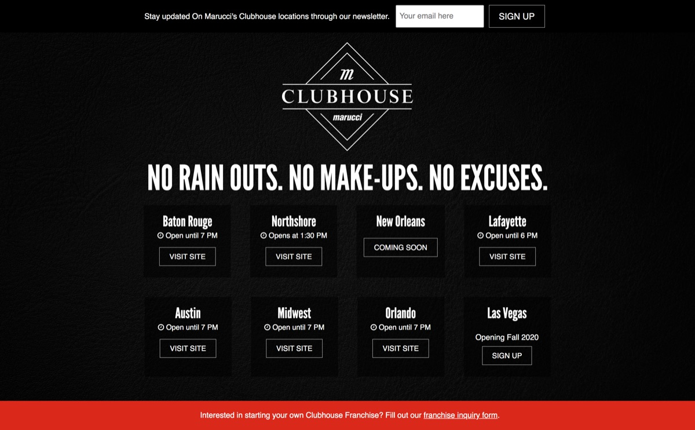
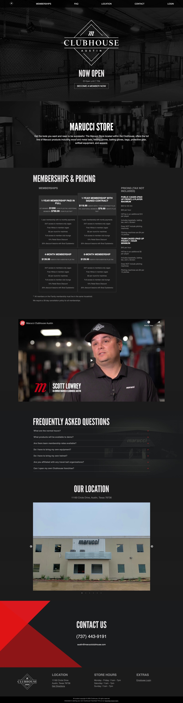

Marucci Clubhouse was the website for Marucci's retail stores and batting cages all over the country. Eight locations were opened up with different membership rates and exclusive products.
I was assigned to create a static site generator that would allow marketing to create new stores and allow content to be created or edited from an admin site. I decided to create a Jekyll site and connect it to Siteleaf CMS.
The goal was to give each location the ability to publish their individual hours and membership rates, create location contact and membership forms, and improve overall performance.


Marucci Clubhouse has since rebranded as Hitters House (a later redesign I wasn't part of) - but the site I built lives on in the Internet Archive.